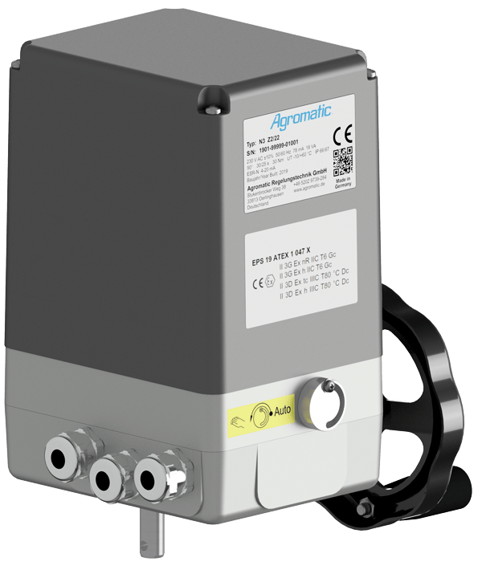

Dreh- und Schwenkantriebe
Für Armaturen, Klappen, Kugelhähne und industrielle Stellglieder mit definierter Dreh- oder Schwenkbewegung.
- Drehmoment
- 25 Nm bis 500 Nm
- Stellzeit 90°
- ca. 1–220 s
- Erweiterter Bereich
- projektbezogen bis 32.000 Nm
Produktbereiche
Unsere Produktbereiche führen schnell zum passenden Antrieb: Dreh- und Schwenkantriebe, Linearantriebe, ATEX-/IECEx-Ausführungen, Zubehör und kundenspezifische Sonderlösungen
Übersicht
Jede Rubrik verbindet typische Anwendungen mit den wichtigsten Leistungsbereichen und führt schnell zur passenden Produktfamilie.
Für Armaturen, Klappen, Kugelhähne und industrielle Stellglieder mit definierter Dreh- oder Schwenkbewegung.

Für Schieber, Ventile und lineare Stellaufgaben in Maschinen und Anlagen – vom kompakten Aufbau bis zu hohen Kräften.

Explosionsgeschützte Dreh-, Schwenk- und Linearantriebe für Zone 2 und Zone 22 in prozesstechnischen Anwendungen.

Ex-Ausführungen für besonders kritische Anwendungen. Das Zone-1-Bild wird ausschließlich in dieser Rubrik verwendet.
Technische Daten
Die Werte dienen als Orientierung für die Vorauswahl. Die konkrete Ausführung hängt von Anwendung, Einschaltdauer, Stellzeit, Spannung, Umgebung und Optionen ab.
| Produktfamilie | Typen / Baugrößen | Drehmoment / Kraft | Stellzeit / Hinweis |
|---|---|---|---|
| Dreh- und Schwenkantriebe | nT 25, NK, NL, N1–N4 A, N5–N6, N8, NV | 25 Nm bis 500 Nm | ca. 1–220 s / 90° je nach Baureihe |
| Dreh- und Schwenkantriebe, hoher Bereich | projektbezogene Ausführungen | bis 32.000 Nm | Auslegung nach Anwendung und Getriebe |
| Linearantriebe | K, KA, V | 600 N bis 5.000 N | Auswahl nach Hub, Kraft und Schubgeschwindigkeit |
| Linearantriebe, hoher Bereich | ergänzende Linearantriebe | bis 25 kN / bis 190 kN | Schubgeschwindigkeit je nach Ausführung, Hub und Last |
| ATEX Zone 2 / 22 Dreh- und Schwenk | N1–N4 A Z2/22, N5–N6 Z2/22, N8 Z2/22 | bis 310 Nm, projektbezogen bis 500 Nm | ca. 1–220 s / 90° je nach Baureihe |
| ATEX Zone 2 / 22 Linear | K Z2/22, KA Z2/22, V Z2/22 | 600–5.000 N | Auslegung nach Hub und Stellgeschwindigkeit |
| IECEx / ATEX Zone 1 Dreh- und Schwenk | NEx 1–NEx 4 A, NEx 5–NEx 6, NEx 8 | bis 310 Nm | ca. 1–130 s / 90° bei NEx 1–NEx 6; NEx 8 nach Ausführung |
| IECEx / ATEX Zone 1 Linear | NEx-K, NEx-KA, NEx-V | 600–5.000 N | Auslegung nach Hub, Kraft und Ex-Anforderung |
Auswahlhilfe
Für eine belastbare Vorauswahl sind vor allem Bewegungsart, Leistung und Umgebungsbedingungen wichtig. Bei Ex-Anwendungen kommen Zone, Zulassung und Temperaturbereich hinzu.
Schnelle Orientierung
Drehen oder Schwenken: Dreh- und Schwenkantrieb
Geradlinig verstellen: Linearantrieb
Ex-Bereich Zone 2 / 22: ATEX-Ausführung
Ex-Bereich Zone 1: IECEx / ATEX-Ausführung
Hohe Kraft oder Sondermechanik: technische Anfrage mit Eckdaten
Kontakt
Senden Sie uns Bewegungsart, Drehmoment oder Kraft, Stellzeit, Spannung, Einbausituation und Einsatzumgebung. Wir prüfen die passende Produktfamilie und die geeignete Ausführung.
Agromatic Regelungstechnik GmbH
Stukenbrocker Weg 38 · 33813 Oerlinghausen
Telefon: +49 5202 9739 0 · E-Mail: info@agromatic.de